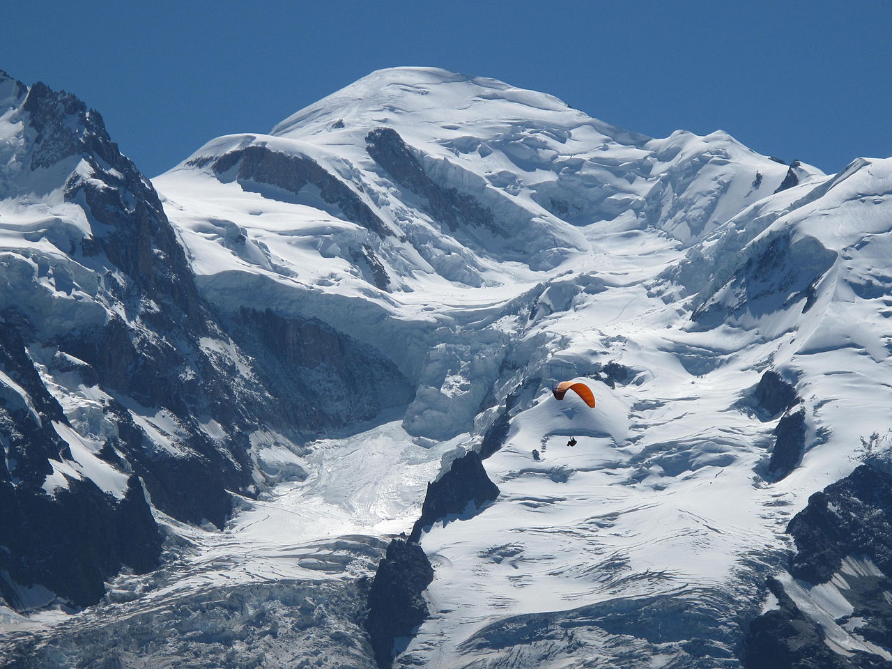

Mont blanc
Mont Blanc (French: [mɔ̃ blɑ̃]; Italian: Monte Bianco [ˈmonte ˈbjaŋko]; meaning "White Mountain") is the highest mountain in the Alps and the highest in Europe west of the Caucasus peaks of Russia and Georgia.[note 2] It rises 4,808 m (15,774 ft) above sea level and is ranked 11th in the world in topographic prominence.[2] The mountain stands in a range called the Graian Alps, between the regions of Aosta Valley, Italy, and Savoie and Haute-Savoie, France. The location of the summit is on the watershed line between the valleys of Ferret and Veny in Italy and the valleys of Montjoie, and Arve in France, on the border between the two countries.Back